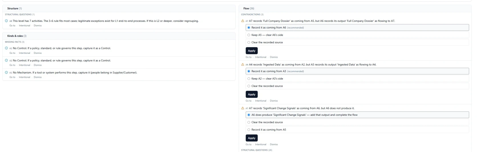
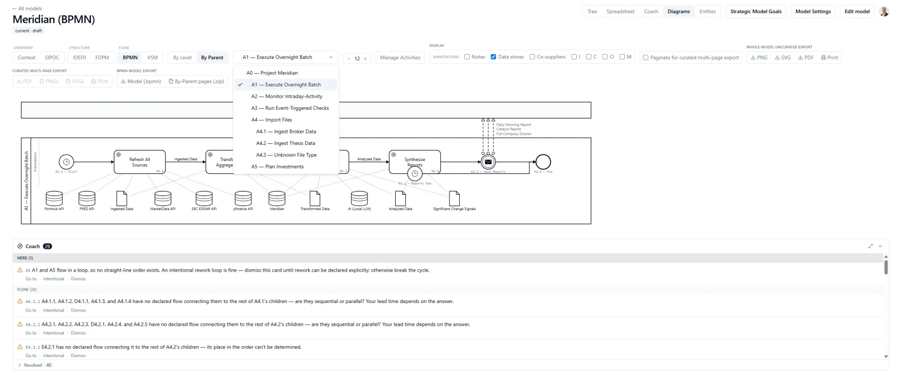
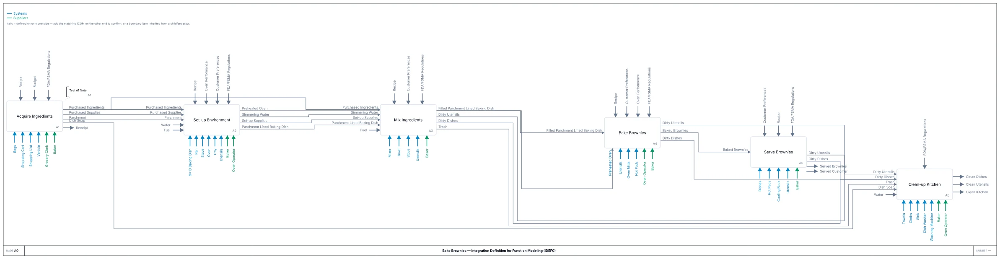
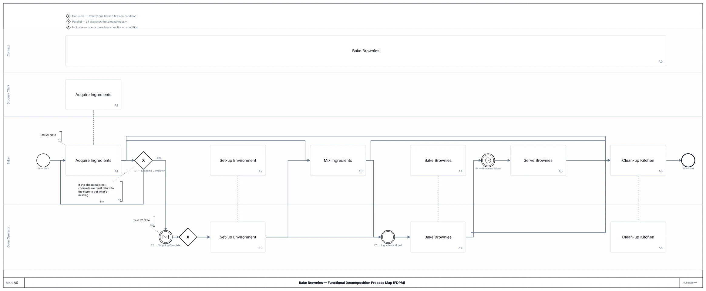
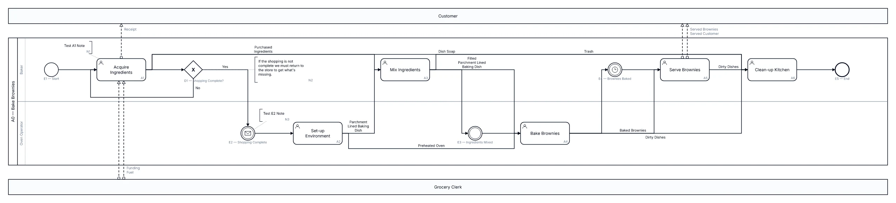
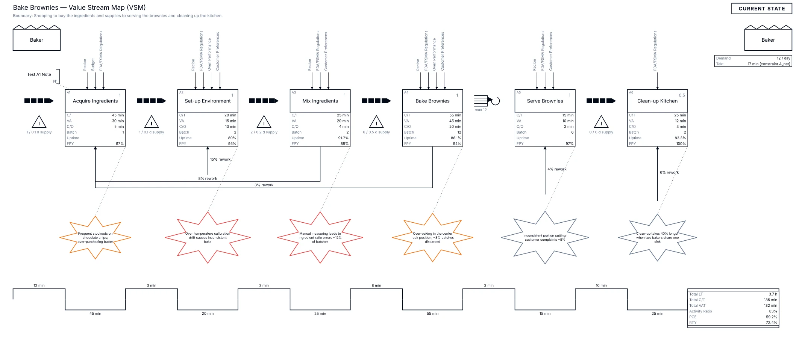
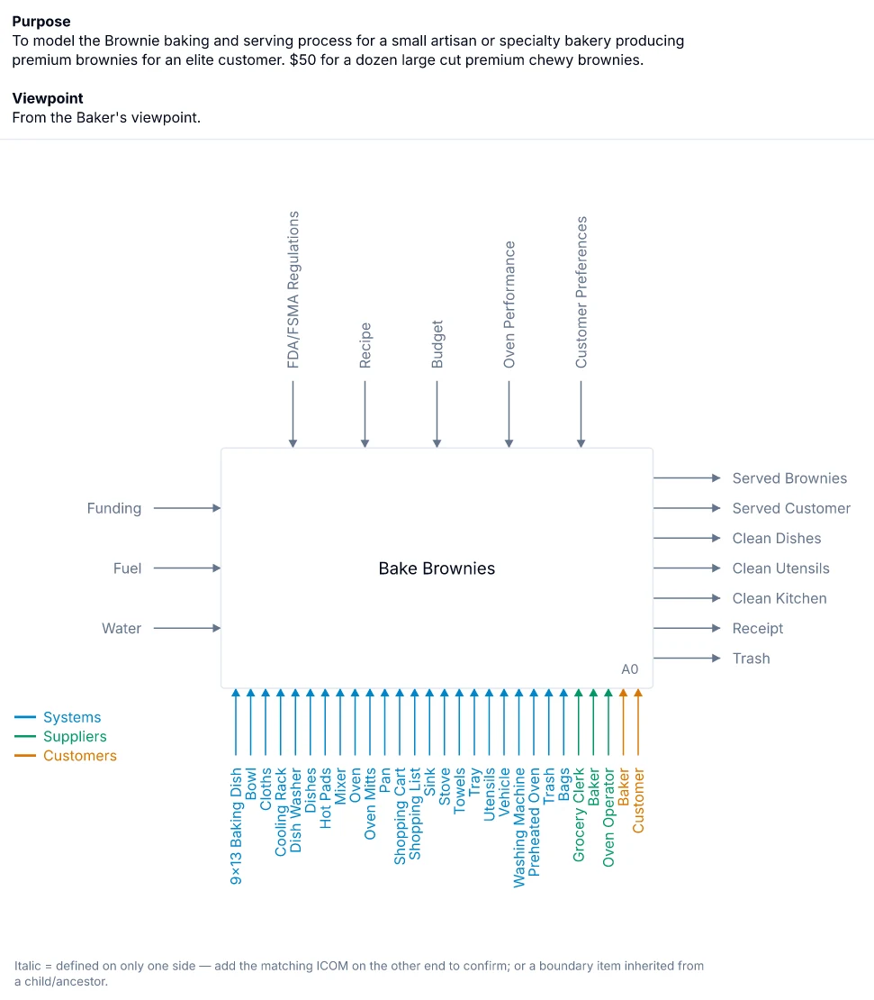
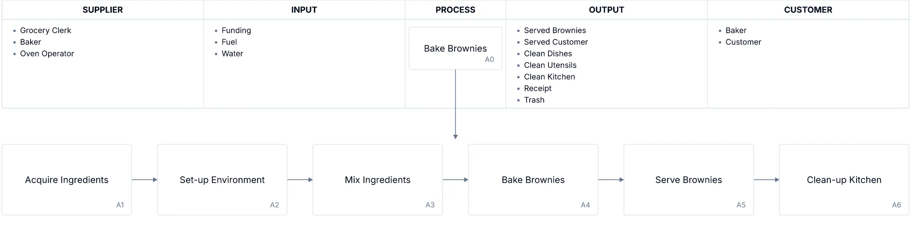
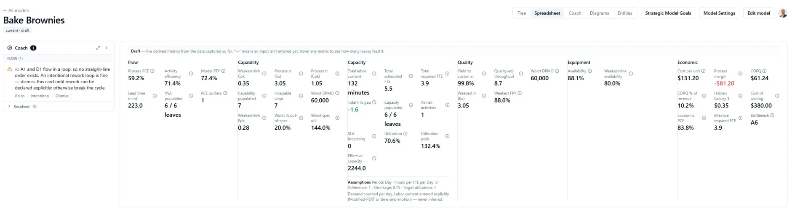

Systems
Thirty-one years, one thing: listen until the work is understood, diagnose what is happening, transform the work, and leave that new understanding in a form the team can run without me. Only the form has changed: procedures, then governance models, then pipelines, now software. Forester is the sixth time, and this time the expertise being encoded is my own.
Forester · product, 18 sprints shipped, not publicly launched
I was teaching the method to an AI so it could help me finalize the rest of the Forest and Trees series, and on a fresh read of the whole series it said, unprompted, that this should be an application. I had been waiting for a practical app that only I could build, and that was the day Forester started.
Most process tools draw a picture. This one captures the process as data, then draws every picture from it. What follows is the actual sequence, using two real models: a client engagement mid-build, and a reference model already resolved.
01 · The problem
Two people describe the same handoff differently. One activity claims an input that nothing upstream produces. A diagram gets signed off because it looks right, and every number derived from it inherits the error. At scale a human reviewer cannot hold the whole graph in mind, so the contradictions survive.

A tool that finds nothing proves nothing. This is what working looks like.
02 · Resolution
The third finding is the interesting one. The Coach does more than flag the missing output. It infers it: “A6 does produce Significant Change Signals. Add that output and complete the flow.” One click writes it into the model. That is the difference between a tool that validates and a tool that builds alongside you, and it is where the hours go.
Findings are scoped: HERE for what is wrong at the current node, FLOW for what is wrong across the model. Nothing blocks saving. Advisory by design, because a methodology that refuses your work does not get used.
03 · One model, many lenses
Every diagram is drawn from the same stored model, so a single ICOM arrow is at once a graph edge feeding the IDEF0 diagram, a labelled flow in the BPMN, and an input to the rolled-up yield calculation. Change the model and every view changes with it.

.bpmn. The Coach runs against whatever is on
screen.
04 · The output
Below is one reference model, Bake Brownies, rendered six ways. Nothing here was drawn. A practitioner who would have spent hours on a single Visio diagram gets the whole set the moment the model exists, at every decomposition level.
Three are recognized industry standards. One is proprietary. Two are executive one-pagers. And yes, the process is a brownie recipe.






05 · Instrumented, not drawn
This is the part that separates a diagram from a management instrument. Every metric is organized by the lens that cares about it, so a COO and a CFO read the same model in their own language rather than a shared wall of numbers.

Note the assumptions line. Labor content is entered explicitly, never inferred.
Where this stands. Phase 1 is feature complete and in active hardening. The capture schema, the derived-metric algorithms, all six visual languages, full import and export round-trip, and the Coach are shipped and dogfooded on a live client engagement. The executive dashboards, the AI interview agent, and multi-tenant activation are the phases still ahead.
It is not publicly launched, and the product name is not final.
Requirements Fit Analyzer · in daily use
A system that reads requirement documents and measures how well each one fits a verified record of evidence. Its first job is my own career search: every night it reads open roles straight from employers’ own job boards, scores each one against my record, and shows me where the fit is strongest.
Deterministic by default. Rules, trained models and a local embedding model do the volume work, the same way every night. Two AI judges read only the shortlist, and only after a measurement-system study against grades I gave blind, before seeing any machine score. One passed and may demote a clear miss. The other never passed, so it appears only as evidence. My calls outrank every model.
Claims are selected, not written. When I apply, AI chooses statements word for word from 202 verified statements about my work, and a script checks every figure against its source before anything goes out. Another script finds every edit I make to what I send, and those edits teach the voice guide and the record.
Meridian · client engagement, in daily use
An AI-assisted research system for a private investor, and itself a pull: the client had watched me build and ship Benson Academy, and offered the contract on the strength of what he saw. Discovery came first: requirements, evaluation of more than 20 candidate data sources, and the system architecture, all delivered and invoiced before a line of production code was written.
The method on a paid engagement. I modeled the client's operating process in Forester before designing anything, and that model became the architecture's top-level decomposition. It was the first time the method and the tool were tested together on a client’s project and budget.
In daily use since August 2026, on the client’s own machine: scheduled ingestion into PostgreSQL, an analytics layer, and a reporting surface. The nightly transform ran 7 hours and nobody knew where the time went, so I stopped guessing and profiled it. Two rewrites I had already built, a numpy vectorization and a parallel staging path, turned out to be aimed at the same 23% of the runtime. The window functions were 13.4 seconds of a 59 second recompute. The write was the other 46.
The wins were the unglamorous ones: narrower stored rows, an autovacuum gate, and a rebuilt query that reads a hundred times fewer pages. 7 hours to 4. The vectorization was validated bit-exact across 7.3 million rows, measured 3.3× slower end to end because the write dominated, and stayed in the codebase behind a flag as a closed question rather than a failure.
“…Jeff, who has detailed knowledge of both the business needs and IT technology, provided the translation between myself and the end-users.”
Phet Boudsyvongsakd Systems Developer, Verizon, on an earlier build Jeff ledBenson Academy · in production
A full-stack Next.js and TypeScript application, built solo and live, serving a multi-course curriculum.
Each lesson is one truth taught through many formats, and the finished, audited article is the source everything else is built from. A documented 13-phase production process, written as a set of skills Claude follows, turns it into the rest: the web lesson, a study guide, a teacher packet, a class handout, a full and a short teaching slide deck, our own two-host podcast, an explainer video of about ten minutes, and a LinkedIn article. Then, for each of the lesson’s seven to ten sections, an illustration, the article read aloud in two AI voices, and a section video, so the full lesson plays on YouTube in sections. That is more than 40 published assets per lesson.
Now in its Gamma release, after the Beta: five lessons rebuilt to this standard, including the first lesson of a second course, Abide 102. The site’s whole look was redesigned by Claude Opus 5.5 overnight, working toward a goal I set before I went to sleep.
The transferable part is the pipeline behind it. A grounded knowledge base is the source of truth, generation is constrained to it, and every step that touches Scripture pulls it from a translation tool, never from memory, and a script checks every quotation in every written asset before it counts as done. Custom Python handles asset automation, and a mandatory human review gate comes before publication. Research to published cycle time fell roughly 80%, with source traceability maintained and zero tolerance for unverified claims.
That architecture is the same shape any organization needs before it puts generative AI near customer-facing or regulated content: retrieval grounded in a source of record, and a human accountable at the gate.
Work sample · public and runnable
A take-home assessment for a government data engineering role: compare a legacy healthcare claims system against its replacement, find the discrepancies, and say whether the migration should proceed. Everything else on this page is work I scoped myself. This one I did not.
Most migration validations report row counts and null rates. I ran it as a quality problem instead: defects per million opportunities, sigma levels, and yield, field by field, rolled into a go/no-go scorecard an executive can read in one screen. The headline numbers looked good, 4.58σ on carrier claims and 4.68σ on beneficiary summary. The scorecard still said do not proceed, because 4,777 claims and 159 beneficiaries had gone missing outright and 82,699 payments disagreed. Good average quality was hiding categorical failures, which is exactly what a sigma-level view is for.
Built on DuckDB with chunked streaming for memory efficiency, SQLAlchemy, scipy for the inverse-normal sigma calculations, and a Streamlit dashboard with 9 views. It runs end to end on CMS public synthetic data, so anyone can reproduce it.
On how it was built. The analysis was mine: which comparisons mattered, how to frame quality as a sigma problem, what the scorecard should say, and where the real risk was. I built it with Claude Code. Mostly I directed: what each query had to answer, and how the data should be scored for the Lean Six Sigma calculations. Some of it was hands-on: I started several queries myself and had the AI finish them by following my pattern across about a hundred columns. That is the same division of labor stated everywhere else on this site, and this is the one place you can go inspect it yourself.
Utility · open source
Every operation has one: a spreadsheet that runs something important, built by someone who left, with twenty tabs, no documentation, and a monthly cycle that leaves nobody time to untangle it. Opening it and reading cells is how people usually start. It is also why they never finish.
sheets_decomposer starts somewhere else. Point it at a Google Sheet or an Excel file and it extracts the whole structure as data: every formula, every reference, the named ranges, validations, and hidden tabs. It rewrites the formulas in relative notation so that a column of two hundred cells collapses to one line of logic, builds the dependency graph between tabs, and classifies each tab as input, calculation, or output. Then it runs the checks a careful analyst would run by hand: formulas typed over with a number, cells that break the pattern of their neighbors, literals hidden inside logic, broken links, numbers stored as text, tabs nothing reads. The result is a report with the questions to ask the owner, a queryable DuckDB database, and a structure-only context file for a language model.
That last piece is the point. Loaded into a Gemini Gem or a Claude Project, the context file becomes living documentation for the workbook: anyone on the team can ask what a tab does or where a number comes from, and the answer cites the cell. One command republishes the file whenever the workbook changes, so the documentation keeps up with the sheet. The model never sees the spreadsheet and never sees the data. It sees the extraction and says "not in the extraction" when the answer is not there. Deterministic scripts find the problems, the model explains them, and a person reviews anything that becomes a source of truth.
On how it was built. The method is the one described across this site, made runnable: inventory first, patterns not cells, defects in the owner’s vocabulary, build alongside rather than modify in place. The code was written with AI assistance in one evening, against a synthetic capacity model with fifteen planted defects, so the checks could be scored against an answer key before they were trusted.
If something in your business has become too tangled to see, I would like to talk about it.